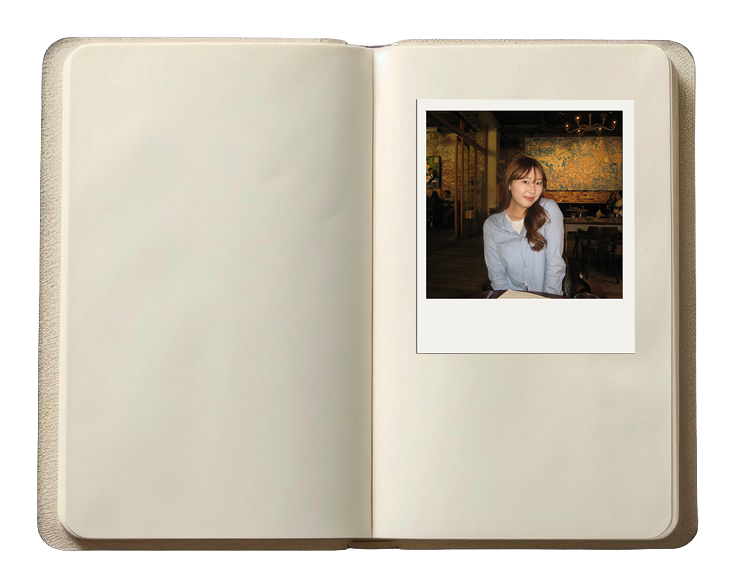

Dear Los Angeles
about
neigborhoods
archives

Dear Los Angeles is a community archive of food memories across the city, where meals become stories tied to neighborhoods and people. Growing up in Los Angeles, I've come to know the city through the places I've eaten like meals that hold comfort, routine, and memory. In a city this big, food is what makes it feel personal. This project is a space to collect those moments and share what it means to feel at home here.
Hi! I'm Chloe Lee, born and raised in LA and a huge foodie. This city has so much to discover and I'm here for all of it. Come explore Los Angeles through food with me!